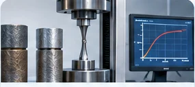

Матеріали та їх властивості
Дослідіть закономірності, змініть параметри моделі та запропонуйте власне рішення.

Коротка теорія · відкрити
Сталі й чавуни відрізняються складом і властивостями. Композити поєднують матрицю та армувальний компонент. Під час добору матеріалу враховують міцність, густину, корозійну стійкість та вартість.
Які теми навчальної програми поєднано?
- Металургія
- Композиційні матеріали
1. Сформулюйте гіпотезу
Як зміниться умовна питома міцність композиту зі збільшенням частки волокон?
2. Додаткова модель і спостереження
Змінюйте параметр повзунком. Зафіксуйте щонайменше три значення та поясніть тенденцію.
3. Конструктор дослідження
Перейдіть усіма етапами та визначте, що Ви робитимете на кожному.
Етап 1/5: Проблема
4. Перевірте себе
Що входить до волокнистого композиту?
5. Інженерний мініпроєкт
Порівняйте сталь, алюміній та композит для рами велосипеда за трьома критеріями.
Ваші записи автоматично зберігаються у цьому браузері.
Підсумковий звіт
PDF міститиме гіпотезу, спостереження, ідею проєкту та поточний результат моделі.
У вікні друку виберіть «Зберегти як PDF».